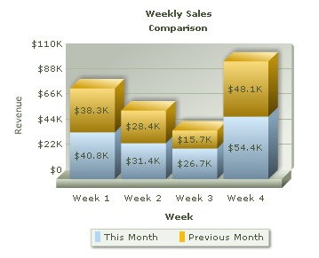

FusionCharts ASP Class API > Creating Stacked Chart |
|
FusionCharts v3 offers Stacked Chart – a type of Multi-series chart where multiple datasets are stacked one above the other. Have a look at the the image below to have an idea how a Stacked Chart looks like: |
|  |
Before you go further with this page, we recommend you to please see the previous pages "Creating First Chart " & "Creating Multi-series chart" as we start off from concepts explained in that page. |
The process of generating Stacked chart is same as Multi-series chart. The only difference is here we need to specify a different chart type. Open and modify the mulit-series chart you have created in the previous page like this: |
<%@LANGUAGE="VBSCRIPT"%> |
As you can see, while creating the chart object, we have only changed the chart type to stackedColumn3D FC = new FusionCharts |
|
| Please go through FusionCharts ASP Class API Reference section to know more about the functions used in the above code. |
| Here comes the output: |